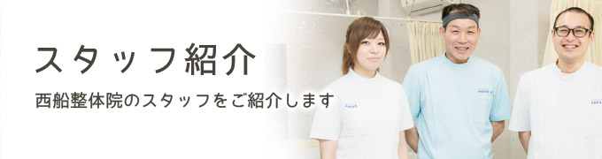
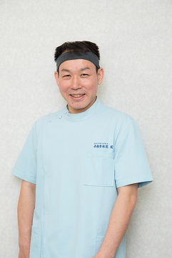
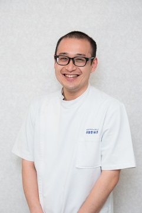

HOME ＞ スタッフ紹介

西船整体院 院長 小林

略歴東京カイロプラクティックカレッジ卒業
全国カイロプラクティック師会. 認定カイロプラクター
【患者様へ】
当院は一般整体はもちろん、O脚・X脚矯正、足痩せ、骨盤矯正、産後の骨盤矯正などのコースも好評をいただいております。
駅から徒歩約２分、９時から20時まで受付、土・日・祝日も開院と利便性も高く、主婦、サラリーマンの方、サッカー、スポーツ選手、ケガや病気からのリハビリ中の方、医師、看護師など、ジャンルを問わず、多数の方々にご利用いただいております。
施術に当たっては、知識と経験に裏打ちされた幅広い手技、引き出しの多い技術であらゆる症状に対応します。手技だけではなく、骨盤と膝を内側に締めてリンパの流れと血行を促進するエアマッサージ、内転筋や腹筋を鍛えるテクトロン、神経を平常な状態に戻すスーパーライザーなどの器材も活用します。
また、おくつろぎいただきながら施術を受けられるよう、お着替えも用意しております。お勤め帰り、平日、休日を問わず、リラックスを兼ねてお気軽にご来院ください。
スタッフ 松本

【患者様へ】私に出来る精一杯の施術を心掛けております。
体の痛みや悩みを改善することで患者様が前向きな気持ちに馴れるような施術を目指しています。
皆様の日々の健康の一助となれるよう、精一杯頑張ります。